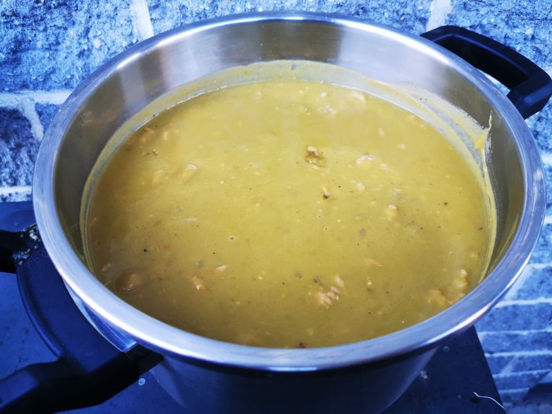

Soupe de pois cassés verts
Préparation: —
Cuisson: 15 minutes
Total: —
Ingrédients
-
2 oignons

-
750 g de longe de porc
-
2 cubes de bouillon aromatisé au poulet
-
2 c. à soupe de sauce soja
-
2 1/2 L d'eau
-
900 g de pois verts cassés
Instructions
Dans un autocuiseur, faire revenir :
- 2 oignons
- 750 g de longe de porc
Rincer les pois verts cassés à l’aide d’une passoire.
- 900 g de pois verts cassés
Ajouter les pois rincés et le reste des ingrédients.
- 2 cubes de bouillon aromatisé au poulet
- 2 c. à soupe de sauce soja
- 2 1/2 L d'eau
Cuire à la vapeur pendant environ 15 minutes.